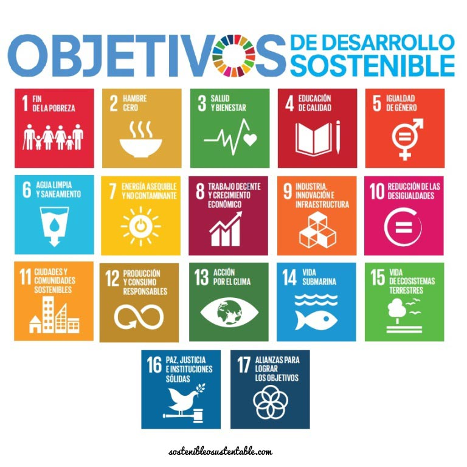
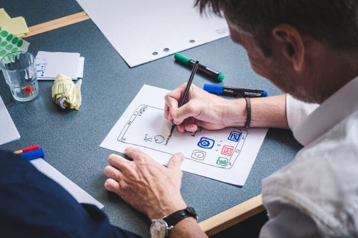

|
En la primera dinámica, llevamos a cabo una tarea en equipo que implicaba diseñar un logotipo o imagen y posteriormente materializarlo mediante la impresión en tres dimensiones. |
|  | En la segunda actividad, llevamos a cabo una presentación sobre el Objetivo de Desarrollo Sostenible que seleccionamos. |
|  | En la tercera dinámica, se generó un proyecto de concepto que fue presentado por uno de nuestros compañeros. |